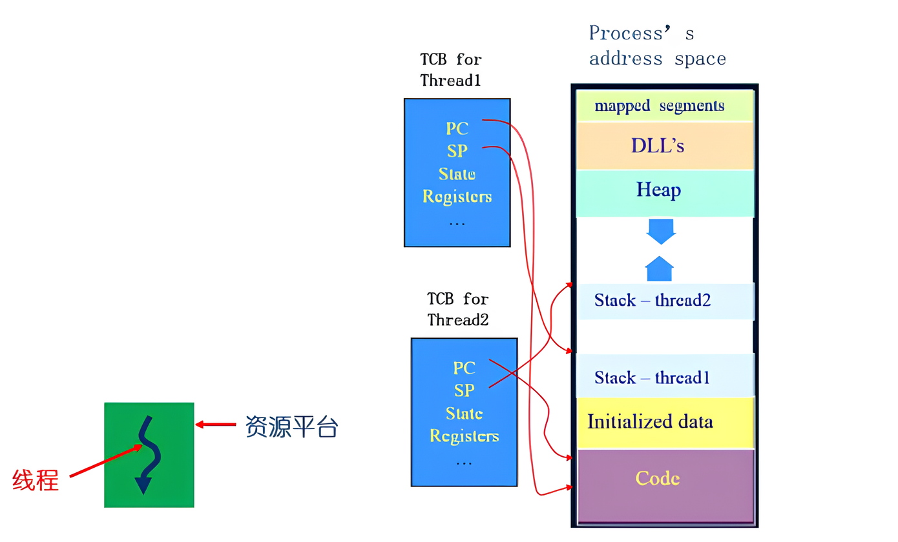
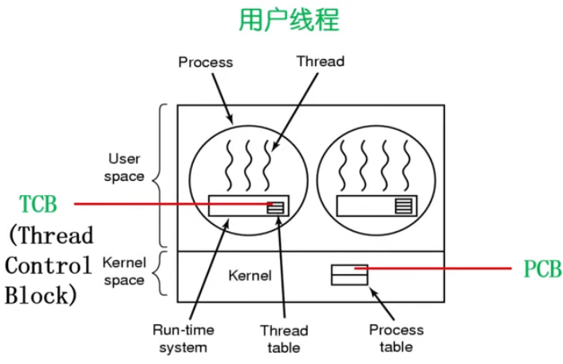
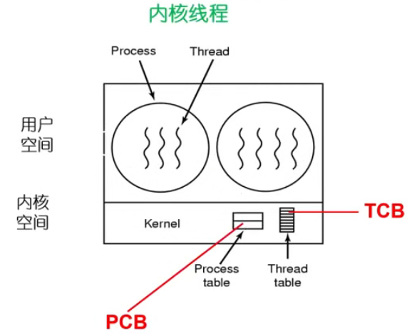

操作系统之 chapter7.3 线程
线程（Thread）是计算机程序中的执行单元，是进程中的一条执行流程。一个进程可以包含多个线程，每个线程可以独立执行不同的任务。线程可以并发执行，因此可以提高程序的执行效率。
从两个方面重新理解进程（Process）：
- 从资源组合的角度：进程将一组相关的资源组合在一起，构成了一个资源平台（环境），包括地址空间（代码段、数据段）、打开的文件等各种资源；
- 从运行的角度：进程是指代码在这个资源平台上执行的一条或多条执行流程（线程）。
为什么使用线程
实例：编写一个 MP3 播放软件，其核心功能为：
- 从 MP3 音频文件中读取数据；
- 对数据进行解压缩；
- 把解压缩后的音频数据播放出来。
单进程实现
1 | int main() { |
多进程实现
1 | // 程序 1 |
操作系统为进程分配哪些资源？
【由 GPT 生成】创建进程时，操作系统需要为进程分配一些资源，其中包括：- 内存空间：为进程分配一定大小的内存空间，用于存储进程的代码、数据和堆栈等信息。
- 文件描述符：为进程分配文件描述符，用于访问打开的文件。
- I/O 设备：为进程分配所需的 I/O 设备，如键盘、显示器、打印机等。
- 网络资源：如果进程需要进行网络通信，需要分配网络资源，如 IP 地址、端口等。
- CPU 时间片：为进程分配 CPU 时间片，用于执行进程的代码。
- 进程标识符：为进程分配唯一的进程标识符，用于标识和管理进程。
- 环境变量：为进程设置环境变量，用于配置进程运行环境。
- 系统资源：为进程分配其他系统资源，如共享内存、消息队列等。
这些资源的分配是由操作系统负责管理和调度的，通过建立进程控制块（PCB）来管理进程的资源和状态。
如何解决
需要提出一种新的实体，满足以下特征：
- 实体之间可以 并发执行；
- 实体之间 共享相同的地址空间。
这种实体就是线程（Thread）。
什么是线程
线程定义
线程（Thread）是计算机程序中的执行单元，是 进程中的一条执行流程。一个进程可以包含多个线程，每个线程可以独立执行不同的任务。线程可以并发执行，因此可以提高程序的执行效率。
从两个方面重新理解进程（Process）：
- 从资源组合的角度：进程将一组相关的资源组合在一起，构成了一个资源平台（环境），包括地址空间（代码段、数据段）、打开的文件等各种资源；
- 从运行的角度：进程是指代码在这个资源平台上执行的一条或多条执行流程（线程）。
进程中的多线程
进程中的多线程：

从图中可以看出：
- 每个线程有各自的线程控制块（TCB）、程序计数器（PC）、堆栈指针（SP）、状态寄存器等；
- 每个线程有共享的资源：代码段、数据段、堆空间等（意味着多个线程都可以访问和修改这些资源）。
线程 = 进程 - 共享资源
线程的优缺点
优点：
- 一个进程中可以 同时存在多个 线程；
- 各个线程之间可以 并发地执行；
- 各个线程之间可以 共享地址空间和文件资源 等。
缺点：
- 一个线程崩溃，会导致其所属进程的所有线程崩溃。（给了它「权限」就得有更高的「责任」）
线程的优点也是线程的缺点，由于共享资源，安全性得不到保障。
线程与进程比较
- 进程是资源分配单位，线程是 CPU 调度单位；
- 进程拥有一个完整的资源平台，而 线程只独享必不可少的资源（如寄存器、堆栈等）；
- 线程同样具有「就绪、阻塞、运行」三种基本状态，同样具有状态之间的转换关系；
- 线程能减少并发执行的时间、空间开销：
- 线程的 创建时间 比进程短（因为线程直接利用了所属进程的一些状态信息，如页表、文件描述符等）；
- 线程的 终止时间 比进程短（因为线程不需要像进程那样进行资源的清理和释放）；
- 同一进程内的线程 切换时间 比进程短（因为同一进程的不同线程的切换不需要切换页表）；
- 由于同一进程的各个线程之间共享内存和文件资源，可 直接进行通信（直接通过内存地址进行数据传递），而不需要借助内核。
线程的实现
主要有三种线程的实现方式：
- 用户线程：在用户空间实现，操作系统看不到用户线程，由应用程序进行管理。
- POSIX Pthreads (Mac/Windows/Linux OS)、Mach C-threads (Mach OS)、Solaris threads (Solaris OS)
- 内核线程：在内核空间实现，操作系统管理的线程。
- Windows、Linux、Solaris
- 轻量级进程（LightWeight Process）：在内核中实现，支持用户线程。
- Solaris、Linux
用户线程
操作系统只能看到进程、看不到线程，线程的 TCB 在线程库中实现。
在用户空间实现的线程机制，它不依赖于操作系统的内核，由一组用户级的线程库（如 pthread.h）函数来完成线程的管理，包括进程的创建、终止、同步和调度等。
- 由于用户线程的维护由相应的进程来完成（通过线程库函数），不需要操作系统内核了解用户线程的存在，可用于不支持线程技术的多进程操作系统；
- 每个进程都需要有它自己私有的 线程控制块（TCB）列表，用来跟踪记录它的各个线程的状态信息（PC、栈指针、寄存器），TCB 由线程库函数来维护；
- 用户线程的切换也是由线程库函数来完成，无需进行用户态到内核态的切换，速度特别快；
- 允许每个进程拥有自定义的线程调度算法。
用户线程的缺点：
- 阻塞性的系统调用如何实现？如果一个线程发起系统调用而阻塞，则整个进程在等待；
- 当一个线程运行时，除非它主动交出 CPU 使用权，否则它所在的进程中的其他线程将无法运行；
- 由于时间片分配给进程，所以与其它进程相比，在多线程执行时，每个线程得到的时间片较少，执行会较慢。
内核线程
操作系统能够看到进程、也可能看到线程，线程在内核中实现。
内核线程是指在操作系统的内核当中实现的一种线程机制，由操作系统的内核来完成线程的创建、终止和管理。
- 在支持内核线程的操作系统中，由 内核来维护进程和线程的上下文信息（PCB 和 TCB）；
- 线程的创建、终止和切换都是通过系统调用 / 内核函数的方式来进行，由内核来完成，因此系统开销较大；
- 在一个进程当中，如果某个内核线程发起系统调用而被阻塞，并 不会影响 其他内核线程在 CPU 上的运行；
- 时间片分配给线程，多线程的进程获得更多 CPU 时间。
轻量级进程
它是内核支持的用户线程。一个进程可以有一个或多个轻量化进程，每个轻量级进程由一个单独的内核线程来支持。
参考资料：
1：https://github.com/OXygenMoon/OperatingSystemInDepth
2：https://blog.csdn.net/weixin_53407527/article/details/125027431